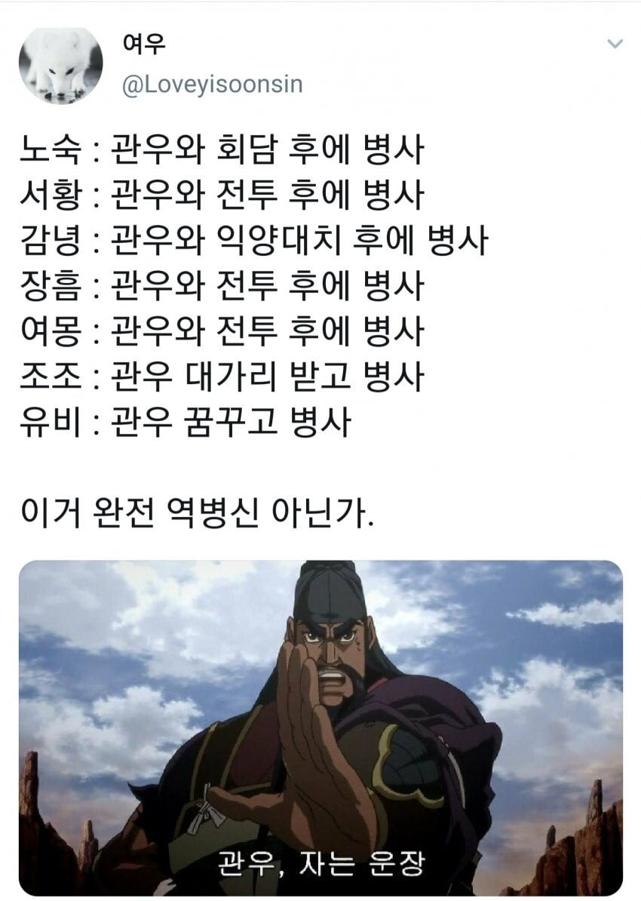
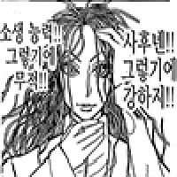

중국의 역병신.jpg
댓글
형주왕 관우
형주 중 유비가 머물던 강하가 지금의 우한
zzzzzzzzzzzzz
만천화우!
아 그거 그렇게 쓰는거 아닌데
역병이기도 하고 어떤면으로는 병신이기도 하고 다른면으로 신이기도 하고
너 위빠지
관우 만나본 사람은 지금까지 살아남은 사람이 없다네요 ㄷㄷ
역병과 같은 존재
관우가 경상도 사람임? 소개할때 자는 이러네 관우랑 운장이랑 콤비로 싸웠었나
마! 니 운장행님 아나!
어? 니 운자이햄 어째아노
너글의 챔피언이었네

행복한 꿈을 살았다
유비가 진짜 재앙의 신이지
우한에 코로나도
고나우, Sleeping 운짱!
어이가 없네 ㅋㅋㅋㅋㅋㅋㅋ
와 암도 안물어본 저 옆 아덜이름도 알려주노
28대 옥황상제이자 역병신
만력제가 빠졌네
자는 또 낳으면 되는 데스
덤으로 관우랑 같은 시대에 있던 사람들 모두 죽었음 ㅎㄷㄷ
리버스 병신
독인의 경지